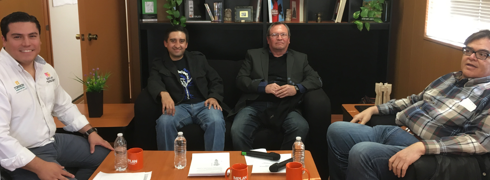

Con el fin de dar difusión a los temas que involucran el futuro de la ciudad, el IMPLAN ha iniciado una serie de transmisiones en vivo a través de su página de Facebook, con charlas y debates donde participan consejeros, ciudadanos y especialistas de la institución.
La primera transmisión fue sobre el tema de Educación Superior en La Laguna el pasado 2 de febrero, la segunda fue sobre Desarrollo Urbano y la tercera sobre Movilidad Urbana Sustentable.
En ésta última se contó con la participación del arquitecto, especialista en urbanismo y movilidad Guillermo Sandoval; y del activista en pro de los derechos del peatón Vladimir Castañeda.
La charla fue conducida por Luis Campos, director de planeación urbana, quien comenzó dando una introducción al tema. Mencionó que la Movilidad Urbana Sutentable “es aquella que logra satisfacer las necesidades actuales de movilidad en las ciudades, sin comprometer el desarrollo que satisfaga las necesidades de generaciones futuras. Viendo el concepto de sustentabilidad desde sus aspectos económico, social y ambiental”.
Comentó que en la actualidad la gente destina una muy buena parte de su ingreso a desplazarse, el 25%, en el transporte público e individual. Mencionó que casi 50% de la movilidad hoy en día se realiza en automóvil particular en La Laguna y sólo 30% en transporte público.

Por su parte, Guillermo Sandoval dijo que “tenemos un modelo de ciudad dispersa, la movilidad nunca ha sido sustentable, difícilmente va a ser porque cada vez la mancha urbana se expande, con muy poca densidad urbana. La ciudad de Torreón está construida a un nivel y en algunas partes a dos niveles, pero realmente no hay una densidad. La gente se tiene que desplazar de un extremo a otro. En su lugar no encuentran las fuentes de abasto, de recreación, de entretenimiento. Ese modelo condiciona que la movilidad sea muy difícil y a muy alto costo, con un despilfarro de recursos”.
Agregó que “no tenemos ciudad con un modelo lineal, sino radial como abanico, hay muchas áreas a cubrir. Nunca cubrirán de una manera razonable toda la ciudad, siempre habrá necesidad de adquirir un vehículo. Las calles no son amigables para el ciclista, menos para el peatón”.
A su vez, Luis Campos agregó que 3.3 millones de horas hombres son invertidas en desplazamientos, que la mancha urbana en la ciudad se ha expandido 7 veces más, de 1980 a la fecha. Otro indicador que compartió es que ocurren 5.4 atropellamientos a peatones por cada mil habitantes.
Vladimir Castañeda afirmó que: “La calle es como un libro, la calle la vamos a tratar de leer, la mejor forma de leerla es caminando”.
Dijo que en la Comarca tenemos calles y espacios públicos que dejan mucho que desear, “hablamos por banquetas obstruidas, construcciones que van por encima del límite. Por fortuna aquí en la gente camina, cada vez más personas pedalean, pero tenemos este problema que nos falta tolerancia y convivencia con todos los actores de la movilidad”.
“Cuando nos subimos al vehículo nos volvemos un poco más agresivos, tenemos una tarea como sociedad, para llevar a cabo una sana convivencia con todos los actores de movilidad”, reflexionó.
“Cuando caminamos tenemos más noción de lo que ocurre en barrios y colonias, las calles están abiertas a leerse, dentro de los peatones hay grupos vulnerables, tercera edad y discapacidad. Necesitamos mejores calles y espacios públicos para todos”.
Las transmisiones en vivo, continuarán todos los miércoles a las 11:00, por la fan page del IMPLAN.
La calle, el lugar que compartimos todos, el lugar donde nos respetemos todos.